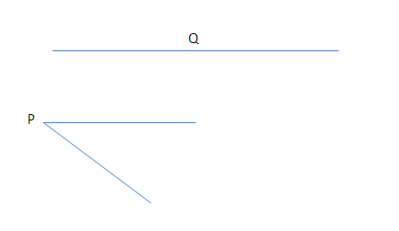
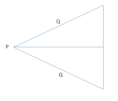

2. Draw two triangles with a common leg PQ using the givens above. It should look like the figure on the right. By drawing them both, you can cut down on steps. What is the smallest number of arcs and lines needed to do this?